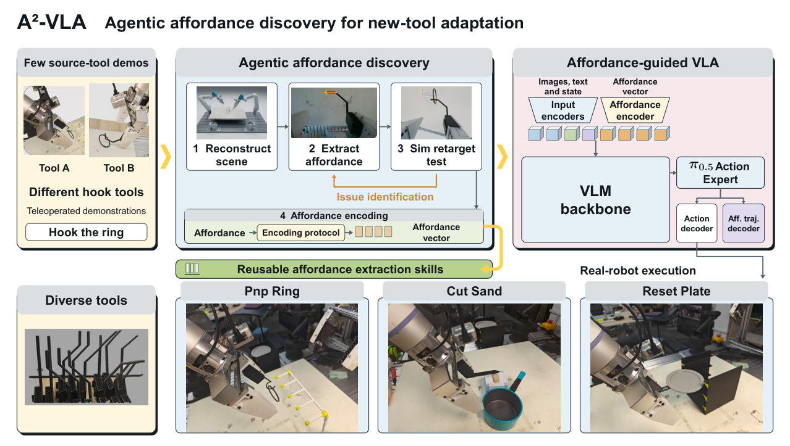
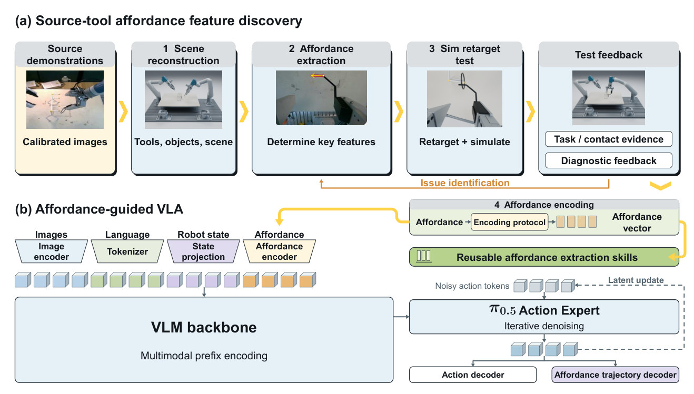
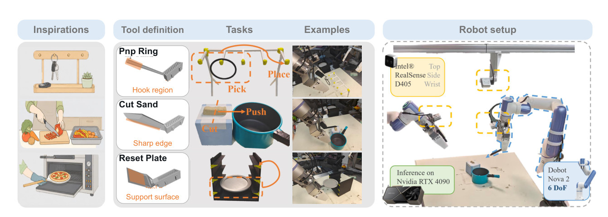
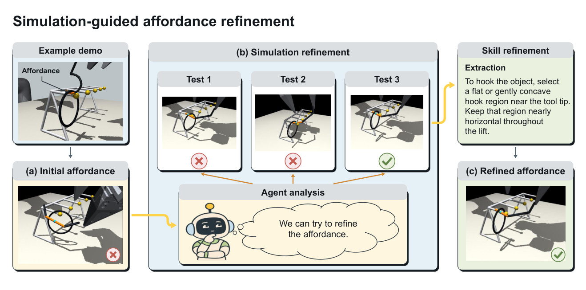
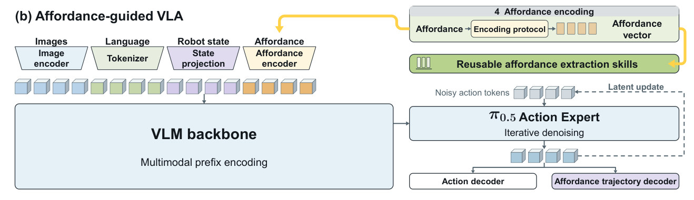
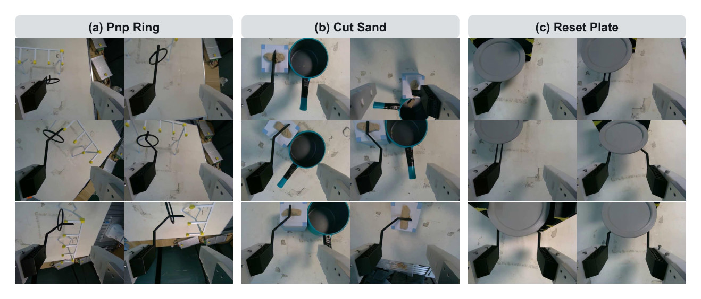
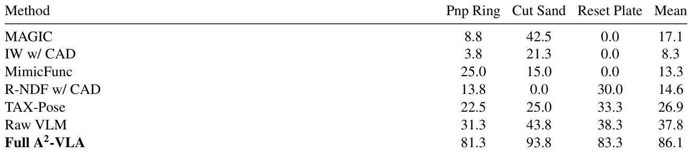
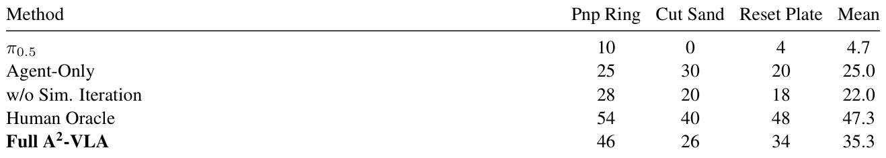
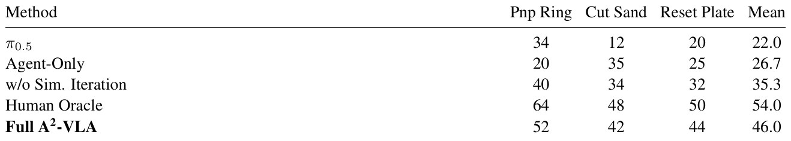
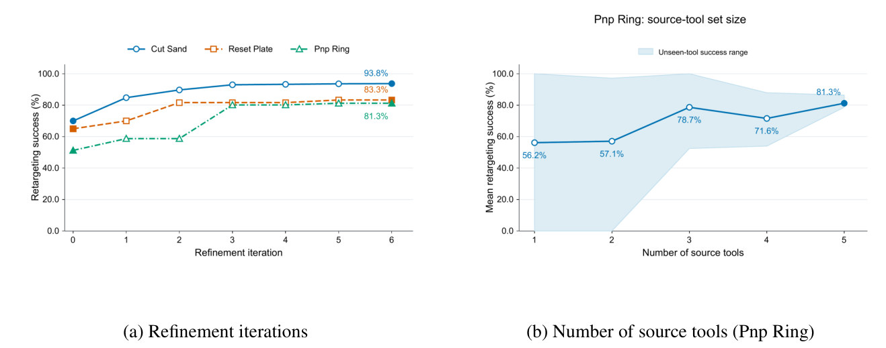

Agent-centric-real-to-sim · 归档于 2026-11-23
A²-VLA
A²-VLA: Adapting Vision-Language-Action Policies to New Tools through Agentic Affordance Discovery
归档到 Agent-centric real-to-sim：agent 把遥操作示范的场景重建进仿真，在里面把工具 affordance 当假设来提出、测试、修改，再把验证过的特征交给 VLA 去用新工具。它也贴近 Robotic harness（agent 负责分析和验证，VLA 负责执行）。
TL;DR
- Problem
- 换一把形状不同的工具，VLA 照搬旧动作就失败（新工具上 π0.5 真机均值只有 4.7%）；能迁移的是"工具上哪一段几何在干活"，而这一段要按任务来选，还要验证。
- Idea
- agent 把示范场景重建进仿真，把 affordance（功能区 + 位置、朝向、方向）当假设：retarget 示范去测，失败就改，通过的提取 skill 入库；12 维特征作为 π0.5 的一个条件 token。
- Result
- 仿真跨工具 retarget 成功率 86.1%（Raw VLM 37.8%，Table 1）；三个真机任务换新工具，均值 35.3%，比 π0.5 高 30.7 个百分点，仍低于 Human Oracle 的 47.3%（Table 3）。
Problem
换一把没见过的钩子，π0.5 在真机上只剩 10%：该迁移的是钩子上托住环的那段几何，不是动作
Running example · 后面每个 stage 都跟着它走
Pnp Ring（Fig. 1 的 "Hook the ring"，Fig. 3 全程用它）：Dobot Nova 2 的机械臂末端装着一把钩子形工具，把钥匙环从左边的桩挪到最右边的桩（§5，Table A2）。有 10 把 source tool，每把 10 条遥操作示范；另有 10 把 unseen tool，只给 RGB-D 检视观测，没有示范（Table A1）。
→ 想要：换上一把没见过的钩子，也能把环钩进、提起、放到最右边的桩上；工具形状不同，手腕动作也得跟着变。
flowchart LR IN["例子输入
没见过的钩子
+ 旧钩子的示范"]:::example IN --> A1["π0.5
学旧钩子的动作"] A1 --> AX["新钩子的几何不在示范里
真机 10%（旧钩子 34%）"]:::gap IN --> B1["MimicFunc · MAGIC
定好的点、框或视觉类比"] B1 --> BX["功能区对不上，钩不进环
仿真 25.0% · 8.8%"]:::gap IN --> C1["Raw VLM
GPT-6 Astra 直接猜"] C1 --> CX["猜一次就用，不测也不改
仿真 31.3%"]:::gap IN --> D1["Agent-Only
GPT-6 Astra 直接控手腕"] D1 --> DX["没有学过的低层动作
真机 25%（旧钩子 20%）"]:::gap
四条"坏在哪"都是推断，论文只报 Pnp Ring 的成功率。仿真数字来自 Table 1（retarget 后在重建场景里执行），真机数字来自 Table 3（unseen tools）和 Table 2（source tools），两者不是同一个指标。π0.5 一行依据 §2（新工具的几何和接触超出训练数据的覆盖）；MimicFunc、MAGIC 一行依据 §2（MimicFunc 的 schema 和建框规则是预定义的；MAGIC 靠视觉-几何类比，工具差别大就困难）；Raw VLM 一行依据 §5.2（差在没有仿真测试和修改）；Agent-Only 的失败原因论文没有分析。
根本问题：跨工具能迁移的不是工具身份，也不是末端轨迹，而是"让这个交互成立的那段几何"（§1）：托住环的那一小段钩子、它的走向、凹口朝哪。现有方法要么事先定死表示，要么猜了不验。 这篇的切入点：把 affordance 当可以做实验的假设，在重建的示范场景里提出、用 retarget 测试、按失败原因修改；验证过的特征编码成 12 个数，作为 π0.5 的条件输入。
Related work
| 相关工作 | 解决什么 | 怎么解决 | 和本文的区别 |
|---|---|---|---|
| 同一问题 · 别的解法 | |||
| 功能点 / 位姿对应迁移 MimicFunc、FuncBridge、KETO、GIFT；TAX-Pose、R-NDF、Interaction Warping（只在 Table 1） | 把示范里的工具用法迁到新工具 | grasp / functional keypoint，MimicFunc 再建 function frame；后三个用 cross-pose 或 descriptor，IW、R-NDF 还拿原始 CAD | 表示的种类事先定好，不问这个任务要哪种几何（Table 1 均值：MimicFunc 13.3%、TAX-Pose 26.9%）→ agent 按任务自选功能区和几何量，再在仿真里检验 |
| 接触类比 + 仿真筛选 MAGIC | 一次示范迁移接触策略 | 匹配 DINOv2 特征和局部曲率找对应，用物理仿真检查候选动作 | 候选来自视觉-几何类比，工具差别大就找不到（均值 17.1%）→ 候选来自对示范的功能分析，失败后改提取 skill，而不只是筛掉 |
| VLA（本文所属，建在 π0.5 上） π0.5、π0、OpenVLA | 从图像、语言直接出机器人动作 | 多模态预训练 + 机器人示范；π0、π0.5 用 flow matching | 只会训练数据覆盖到的工具几何和接触（新工具上 π0.5 均值 4.7%，Table 3）→ 加 1 个 affordance token、辅助 affordance 轨迹 head 和 10% 反事实数据 |
| 相似做法 · 别的问题 | |||
| VLA 的中间引导接口 Hi Robot、HAMSTER、Steerable VLA；RT-Affordance、AFI | 把高层意图交给低层策略 | 语言子目标、2D 路径；关键阶段的末端位姿、3D affordance field | 语言或点表达不了工具的几何细节，引导也不先验证 → 引导是 agent 选定、仿真验证过的功能区几何 |
| Agentic real-to-sim 与技能沉淀 WorldMirror、SceneRig、Agentic RSR；ASPIRE；ReKep、ToolAnalogy、GeT-USE | 重建可交互环境；从执行反馈攒 skill；在仿真里找合适的工具 | 重建场景做轨迹回放和 policy 测试；ASPIRE 按执行反馈修控制程序、提炼 skill；ToolAnalogy、GeT-USE 在仿真里验证工具几何 | 重建用来回放、测 policy 或挑工具 → 把重建的示范场景当 affordance 假设的试验台，通过的提取 skill 为 VLA 产出条件特征 |
来源：论文 §2 Related Work、§1 Introduction 和 §5.1 的 baseline 设定；TAX-Pose、R-NDF、IW 只出现在 Table 1，§2 没讨论它们。library 里已有 WorldMirror、SceneRig、Agentic RSR 的页面；论文只在 §2 把它们列为 agentic real-to-sim 系统，没有数字对比。Raw VLM 和 Agent-Only 是论文用 GPT-6 Astra 搭的基线，不是已有工作，只出现在上面的流程图里。未另行检索。
Level 1 · Big picture
agent 在重建的示范场景里提出、测试、修改工具 affordance；VLA 拿验证过的特征去用新工具

怎么读这张图
- Few source-tool demos（左上，黄）：Tool A、Tool B 是两把形状不同的钩子（Different hook tools），各有遥操作示范，任务是 Hook the ring，也就是例子里的 source tool。
- Agentic affordance discovery（中，蓝）：1 Reconstruct scene → 2 Extract affordance → 3 Sim retarget test；橙色的 Issue identification 箭头从 3 回到 2，就是"测试失败 → 修改假设"的循环（Stage 1–3）。
- 4 Affordance encoding：Affordance 经 Encoding protocol 变成 Affordance vector；例子里是 12 个数的钩段特征（Stage 4）。
- Reusable affordance extraction skills（绿条）：通过测试的提取 skill 入库，拿去处理左下的 Diverse tools：一排形状各异的钩子，即 unseen tools。
- Affordance-guided VLA（右，粉）：Input encoders 处理图像、文字和状态，Affordance encoder 处理 affordance vector，一起进 VLM backbone；π0.5 Action Expert 出两路：Action decoder（动作）和 Aff. traj. decoder（辅助的 affordance 轨迹，Stage 5）。
- Real-robot execution（下排）：三个真机任务 Pnp Ring、Cut Sand、Reset Plate（Stage 6 和 Results）。
flowchart LR I["Input
10 把钩子 × 10 条示范
+ 新钩子的 RGB-D"]:::example --> M["Agent：仿真里测假设
末端钩段 → f_hook
12 个数"]:::win M --> O["π0.5 + affordance token
新钩子真机 46%
π0.5 只有 10%"]
Level 2 · Stages
6 个 stage：前 3 个在 source tool 上发现 affordance，后 3 个把它编码、交给 VLA、用到新工具上

怎么读这张图
- (a) 上排从左到右：Source demonstrations（Calibrated images，真机照片）→ 1 Scene reconstruction（Tools, objects, scene，仿真渲染）→ 2 Affordance extraction（Determine key features，缩略图里工具末端画着一个橙色箭头）→ 3 Sim retarget test（Retarget + simulate，工具穿过环）→ Test feedback（Task / contact evidence、Diagnostic feedback）。
- 橙色 Issue identification：从 Test feedback 回到 2：测试失败，就回去改功能区、几何量或提取 skill（Stage 3）。
- 右侧 4 Affordance encoding 和 Reusable affordance extraction skills：假设通过后按编码协议变成 affordance vector，提取 skill 入库（Stage 4）。
- (b) 下排：四路输入 token 进 VLM backbone，π0.5 Action Expert 去噪，出 Action decoder 和 Affordance trajectory decoder 两路（Stage 5 放大讲）。
flowchart TD
subgraph A["Source tools · agent"]
direction LR
S1["1 · Reconstruct
桩架、环、钩子"] --> S2["2 · Hypothesis
钩段 p、t、d"]
S2 --> S3["3 · Sim test
Test 1 ✗ 2 ✗ 3 ✓"]
S3 -.->|失败就改| S2
end
subgraph B["VLA · unseen tool"]
direction LR
S4["4 · Encode + library
f_hook，12 个数"] --> S5["5 · Train VLA
π0.5 + 1 个 token"]
S5 --> S6["6 · Unseen tool
真机 46%"]:::win
end
A --> B
click S1 href "#stage-1"
click S2 href "#stage-2"
click S3 href "#stage-3"
click S4 href "#stage-4"
click S5 href "#stage-5"
click S6 href "#stage-6"
点击 stage 展开 Level 3 细节。Stage 2 ⇄ 3 的"测试 → 修改"循环在 source tool 上跑，部署时又在新工具上跑一遍（Stage 6）。
Level 3 · Details
每个 stage 的细节
Stage 1 Scene reconstruction（real-to-sim） 遥操作示范（标定图像 + 机器人轨迹） → 仿真里的工具、物体和摆放
- Why：要检验"哪段几何在干活"，得有个地方能换工具、改功能参数、挪物体、执行候选动作，并看得到接触和任务结果（§4.1）。
- 输入：source tool 示范的观测和录下的机器人轨迹，加上标定好的相机参数和机器人模型（§4.1）。
- 输出：仿真里的工具、目标物体和它们的空间摆放；录下的机器人动作把重建锚定在示范的交互上（§4.1）。
- 谁做、怎么核对：所有仿真场景和工具都由 GPT-6 Astra 从真实示范重建，再用 trajectory replay（在仿真里重放示范轨迹）检查（§5.1）。
- 新工具：只有 RGB-D 检视观测，没有示范；部署时 agent 先在仿真里重建这把工具（§4.4、§5.1）。之后算功能区位置都要用"工具相对手腕的位姿"（§4.2、附录 C.3）。
- 论文没写：用哪个仿真器、网格怎么得到、质量和摩擦怎么定、replay 检查以什么为通过标准；也没有衡量重建对不对的数字。
flowchart LR a["示范数据
标定图像、相机参数
机器人模型、录下的轨迹"] --> b["GPT-6 Astra 重建
工具、物体、摆放
重放示范来检查"] b --> c["试验台
换工具、改参数
挪物体、跑候选动作"]:::win
Running example 在这一步
Pnp Ring 的示范进仿真：带黄色桩头的桩架、钥匙环、装在机械臂末端的钩子工具（Fig. 2(a) 的 1 Scene reconstruction 缩略图，Fig. 3 的渲染）；用旧钩子重放示范轨迹，核对重建出的场景。之后 Stage 3 在这个场景里把旧钩子换成新钩子来测。
Stage 2 Affordance hypothesis + extraction skill 几把 source tool 的示范 → 功能区 + 几何量（假设）+ 可执行的提取 skill
- Why：该迁移的是"让交互成立的性质"（§1），但哪些性质算数要看任务，所以由 agent 来定，而不是用预定义的 schema。
- 比较：agent 对比不同 source tool 的示范，找出让任务成立的功能区和它的性质：位置、局部朝向、任务专属的方向（§4.2）。
- 写 skill：为这些特征写可执行的 affordance-extraction skill（§4.2）。论文没说 skill 用什么语言或 API 写。
- 算特征：skill 在每个示范时间步算出特征向量，空间量都换到机器人基座坐标系：工具相对手腕的位姿 + 手臂正运动学（§4.2、C.3）。
- 排成轨迹：按时间排起来就是这条示范的 affordance 轨迹（§4.2），后面既做测试参考，也做 VLA 的训练标签。
符号先说清（附录 B）
| 符号 | 白话 | Pnp Ring 里 |
|---|---|---|
| ft | 第 t 个时间步的 affordance 特征向量，12 个数；位置和方向都写在机器人基座坐标系里 | 钩段特征 fhook |
| p | 功能区的核心点位置（3 个数） | 末端钩段的核心点 phook |
| t | 功能区那一小段的单位切向，即它的走向 | 钩段的走向 thook |
| n | 功能面的单位法向，即垂直于面的方向 | 不用（Reset Plate 才用） |
| d | 任务专属的方向（3 个数）；某把工具没有这个方向时记为全 0 | 凹口的开口方向 dhook：提起时让环被托住、不被重力带走 |
| vec6(t t⊤) | 把切向和自己做外积，得到对称的 3×3 矩阵，取 6 个不重复的元素；切向正着取、反着取结果一样，所以存的是"轴"，不是"箭头" | 钩段那根轴，6 个数 |
三个任务最后发现的假设（附录 B，每个都是 3 + 6 + 3 = 12 个数）
| 任务 | 功能区 | 记录的几何量 | 缺省怎么记 |
|---|---|---|---|
| Pnp Ring | 一小段近似直线的末端钩段，钩住并托住环 | 核心位置 phook、末端切向 thook、凹口开口方向 dhook | 钩段没有明显弯曲时 dhook = 0（B.1） |
| Cut Sand | 一小段近似直线的末端工作刃 | 刃的核心位置 pedge、刃的切向 tedge、切入材料的方向 dcut | 没有明显刃的杆状工具 dcut = 0（B.2） |
| Reset Plate | 工具上几处合起来构成的支撑面 | 支撑区核心位置 psup、支撑面法向 nsup、抬升方向 dlift | 法向取正取反编码相同，抬升方向保留正负（B.3） |
flowchart LR a["对比 source 示范
Tool A、Tool B 怎么钩"] --> b["定功能区 + 几何量
末端钩段：p、t、d"] b --> c["写 extraction skill
每步算 f_hook
基座坐标系"]

怎么读这张图
- Inspirations：钥匙挂在钩架上、刀切菜、披萨铲托进烤箱，分别对应三个任务。
- Tool definition（橙色）：Pnp Ring 的 Hook region、Cut Sand 的 Sharp edge、Reset Plate 的 Support surface，就是上表里三种功能区。
- Tasks：Pnp Ring 从一根桩 Pick、到另一根桩 Place；Cut Sand 先 Cut 再 Push 进锅；Reset Plate 把盘子从架里托出来，橙色曲线是抬升路线。
- Robot setup：三个 Intel RealSense D405（Top、Side、Wrist），推理在 Nvidia RTX 4090 上，机械臂是 Dobot Nova 2（6 DoF）。
Running example 在这一步
agent 对比几把旧钩子的示范，认定起作用的是"一小段近似直线、钩住并托住环的末端钩段"（B.1），提出假设 f_hook = [p_hook; vec6(t_hook t_hookᵀ); d_hook] ∈ ℝ¹²，并写出一个提取 skill：给任何一把钩子和它在手腕上的安装位姿，每个时间步算出这 12 个数。
Stage 3 Sim retarget test：接受还是推翻假设 候选 affordance + 重建场景 → 任务结果、接触、诊断视图 → 接受或修改
- Why：假设好不好，看它能不能让另一把工具完成同一个任务：按特征把示范 retarget 到另一把工具上，在仿真里执行（§4.2）。
- 参考：取一条旧工具在仿真里能完成任务的轨迹，算出它每一步的功能区特征，作为参考答案（§4.2）。
- Retarget：给新工具求一条轨迹，让它的功能区每一步都落到旧工具功能区当时的位置和任务相关朝向上，同时轨迹平滑、够得着、不碰撞（Eq. 1）。
- 执行：在重建场景里跑这条轨迹，仿真返回任务结果、接触信息和诊断视图（§4.2）。
- 接受：任务成功，例子里就是环最后在最右边的桩上。推翻：找不到映射、规划不可达（Table 1 都算失败），或任务失败。
- 修改：agent 根据反馈找问题（Issue identification），改功能区、几何量或提取 skill，再测（§4.2）；Fig. 5(a) 报告了 0–6 轮。
符号先说清（Eq. 1）
| 符号 | 白话 | Pnp Ring 里 |
|---|---|---|
| Q = (q0, …, qT−1) | 旧工具在仿真里完成任务的一条关节轨迹，共 T 步 | 旧钩子钩环、提起、放下的动作 |
| ftsrc | 这条轨迹第 t 步时旧工具功能区的特征，即参考答案 | 旧钩段每一步的位置、轴、开口方向 |
| Q′ | 要给新工具求的关节轨迹 | 新钩子的动作 |
| ftgt(q′t) | 新工具在第 t 步姿态下的功能区特征：由手臂正运动学加上"工具相对手腕的位姿"算到基座坐标系 | 新钩段每一步的位置、轴、开口方向 |
| ℒalign | 对齐项：新旧功能区的位置和任务相关朝向差多少 | 钩段位置、走向对不对得上 |
| ℒsmooth | 平滑项：轨迹不要抖 | — |
| Q* | 两项加起来最小、又够得着、不碰撞的那条轨迹 | 拿去仿真里执行的新钩子动作 |
Eq. 1：Q* = arg minQ′ Σt=0T−1 ℒalign(ftgt(q′t), ftsrc) + ℒsmooth(Q′)，约束是可达、无碰撞。
flowchart TD a["候选 affordance
新钩子上的一段"] --> b["Retarget（Eq. 1）
对齐旧钩段的位姿"] b --> c["在重建场景里执行
结果 + 接触 + 诊断视图"] c --> d["成功：接受
环到最右边的桩"]:::win c --> e["失败：找问题
没进环 / 提起时滑落"]:::gap e --> f["修改
区域、几何量或 skill"] f --> a

怎么读这张图
- Example demo（左上）：旧工具是一把弯钩；Affordance 标签指着钩子根部那段橙色的、近乎水平的钩段，环就挂在这里。
- (a) Initial affordance（左下，红叉）：新工具上最初选的区域（橙色线段）落在环旁边，没钩到。
- Agent analysis（中下）："We can try to refine the affordance."，三条橙色箭头指向它试的三种接触位置和朝向。
- Test 1 ✗：选的区域进不了环。Test 2 ✗：钩段向前倾，提起时环滑掉。Test 3 ✓：环被留住。
- Skill refinement（右上，绿）：Extraction 一栏是改好的提取规则："To hook the object, select a flat or gently concave hook region near the tool tip. Keep that region nearly horizontal throughout the lift." 这条规则进 skill library。
- (c) Refined affordance（右下，绿勾）：按新规则选出的钩段穿过环，任务成功。
Running example 在这一步
新钩子上最初的钩段没钩到环（被推翻）→ Test 1 换位置，进不了环 → Test 2 进了环但前倾，提起时滑落：说明光有位置不够，朝向也要管 → Test 3 留住环（接受）。agent 把教训写进 skill：近尖端、平或微凹、提起全程近乎水平。
Stage 4 Encoding protocol + skill library 通过测试的 skill → 统一的 12 维编码 + 入库 + 给全部示范标注 ft
- Why：agent 可以自由选功能区和几何量，但 VLA 要一个固定的输入格式；新工具也得给出同样含义的特征（§1）。
- 定协议：source tool 分析完、VLA 训练前，每个任务的特征定义就定下来，按统一的任务级编码协议取值（§4.2）。
- 同义不同值：坐标表示和特征语义对所有工具都一样，不同工具只是数值不同（§3）。
- 入库：成功的提取 skill 连同它的适用条件进 skill library（§4.2）。
- 标注：入库的 skill 给全部 source tool 示范标上每一步的 affordance 特征，作为 VLA 的训练数据（§4.2）。
- 复用：遇到新工具，检索并套用这些 skill，找到对应的功能区、提取同样的特征（§4.2）。
flowchart LR a["通过测试的 skill
近尖端、平或微凹
提起时保持水平"] --> b["Skill library
skill + 适用条件"] b --> c["标注全部示范
每步 f_hook
12 个数"]
Running example 在这一步
Fig. 3 那条钩段规则入库；它给 10 把 source tool、每把 10 条示范（Table A1）的每一步算出 f_hook。弯钩和没有明显弯曲的钩子都出 12 个数，后者的开口方向记为 0，所以 VLA 看到的永远是同一种格式。
Stage 5 Affordance-conditioned VLA（π0.5） 示范 + 每步 ft 标签 → 以 affordance 为条件的 π0.5，外加辅助 affordance 轨迹 head
- Why：语言或 keypoint 表达不了工具的几何细节（§1）；策略要跟着给定的 affordance 做，同时看当前观测和机器人状态（§4.3）。
- 多一个 token：affordance encoder 把当前工具的 12 维特征投影成 1 个 affordance token，接在图像、语言、状态 token 后面：Xt = [Ximg, Xlang, Xstate, zt]（C.1）。
- 动作照 π0.5 出：action expert 对 H 个带噪动作 token 做 flow-matching 去噪，动作 head 每步出 14 维速度（C.2）。
- 辅助 head：同一组隐状态先过一个 query MLP，再和 affordance token 拼接，过输出 MLP，每步预测 12 个 affordance 数，叠成 H×12 的未来 affordance 轨迹（C.2）。
- 损失：ℒ = ℒact + ℒaff：前者是 π0.5 原有的 flow-matching 误差，后者是预测和标注 affordance 的平方误差，全 0 的方向项也监督（C.3）；用意是让同一任务里不同工具的 affordance 轨迹相似（§4.3）。
- 标签：第 h 步的目标，是动作块里第 h 条指令到达的姿态下的功能区特征，由 Stage 4 的 skill 算出（§4.3、C.3）。
- 10% 反事实 retarget 数据：随机挑示范里的一段，给功能区位姿加一个随机刚体扰动，再用 Eq. 1 重规划，让扰动后的位姿平滑回到原示范的 affordance 轨迹（Eq. 3）；目的是让 VLA 严格跟着当前 affordance 位姿和目标物体的观测做（§4.3）。
- 训练：从预训练 π0.5 初始化，affordance encoder 和辅助 head 随机初始化；35,000 步、batch 32，所有 VLA 方法同一预算（C.3）。
符号先说清（Eq. 2、Eq. 3、附录 C）
| 符号 | 白话 | Pnp Ring 里 |
|---|---|---|
| ot = (It, qt) | 当前观测：相机图像加机器人关节状态 | 3 个 D405 的画面 + 双臂状态 |
| ℓ | 任务指令（文字） | Pnp Ring 的指令，论文没给原文 |
| ft | 当前工具的 12 维 affordance 特征（Stage 2） | 新钩段的位置、轴、开口方向 |
| zt | affordance encoder 把这 12 个数投影成的 1 个 token，宽度和 backbone 里其他 token 一样 | 1 个 token |
| H | 一个动作块包含的步数 | 论文没给数值 |
| At | 动作块：接下来 H 步的机器人指令，每步 14 个数 | 双臂接下来 H 步 |
| Ft、F̂t | 接下来 H 步的 affordance 特征，标注值和预测值，各 H×12 | 钩段未来 H 步的位姿 |
| ΔT | 随机的刚体位姿扰动（一次平移加旋转） | 把钩段挪开、转一下 |

怎么读这张图
- 左上四个编码器：Images → Image encoder，Language → Tokenizer，Robot state → State projection，Affordance → Affordance encoder。橙色方块是 affordance token：图里画了 4 个，附录 C.1 说实际只有 1 个。
- VLM backbone（Multimodal prefix encoding）：处理这一串条件 token。
- π0.5 Action Expert（Iterative denoising）：Noisy action tokens 一轮轮去噪，虚线 Latent update 就是这个迭代（从全噪声到干净动作）。
- 两个输出：Action decoder 出机器人动作；Affordance trajectory decoder 是辅助 head，出未来的 affordance 轨迹。
- 右上：4 Affordance encoding 和 Reusable affordance extraction skills，黄色箭头把编码好的向量送进左边的 Affordance 输入。
flowchart LR a["示范里随机一段
钩段位姿 f_t"] --> b["刚体扰动 ΔT
钩段被挪开、转开"] b --> c["用 Eq. 1 重规划
平滑回到示范轨迹
占训练数据 10%"]
Running example 在这一步
每条 Pnp Ring 示范的每一步：3 个相机画面 + 双臂状态 + 指令 + 当前钩段的 12 个数（变成 1 个 token）→ 动作块，同时预测钩段未来 H 步的位姿。10% 的样本里钩段被故意挪开、转开，动作也重新规划成"把钩段带回示范轨迹"，逼策略看着钩段去做，而不是背动作。
Stage 6 Unseen-tool deployment 新工具的 RGB-D 检视 → 仿真里定好的 ft → VLA 在真机上闭环执行
- 重建 + 提取：agent 先在仿真里重建新工具，用库里的 skill 提取候选 affordance 参数（§4.4）。
- 测 + 改：用这些参数 retarget 示范、做仿真测试，按反馈迭代修改参数（§4.4），即 Stage 3 的循环在新工具上再跑一遍。
- 编码：改好的参数按统一编码协议变成特征向量，交给 VLA（§4.4）。
- 闭环执行：VLA 看特征和当前观测出一个动作块，执行一部分，拿到新观测再出下一块（§4.4、C.4）。
- 特征跟着动：特征里的空间部分每个控制周期都按机器人运动学和工具安装位姿重新算，encoder 再出新的 token（C.4）。
- 分工：上机前 agent 做工具分析和仿真测试，上机后由 VLA 控制真机动作（§4.4）。
flowchart TD
subgraph P["Agent · 上机前"]
direction LR
a["重建新工具
RGB-D 检视"] --> b["库里 skill 提取
候选钩段"]
b --> c["仿真测试、改参数
retarget 示范"]
end
subgraph R["VLA · 上机后"]
direction LR
d["编码 f_t
12 个数 → 1 token"] --> e["出动作块、执行
f_t 随运动学更新"]
e --> f["真机结果
Pnp Ring 46%"]:::win
end
P --> R

怎么读这张图
- (a) Pnp Ring：每组 6 张关键帧，来自不同工具；机器人都用"靠近尖端、平或微凹的钩段"钩起环，正是 Fig. 3 改好的那条规则。
- (b) Cut Sand：用工作刃或末端切开沙，把切下的部分送进碗里。
- (c) Reset Plate：用工具上合适的部分搭成支撑面，把盘子从架上托起、放到上层。
- 比什么：同一任务换一把工具，手腕姿态和动作就跟着变，但起作用的都是同一种功能区。
Running example 在这一步
一把没见过的钩子：RGB-D 检视 → 仿真里重建、挂到手腕上 → 库里的钩段 skill 选出候选钩段 → retarget 示范测试、修改 → f_hook 交给 VLA，每个控制周期按手臂运动学更新。真机上 unseen tools 的 Pnp Ring 成功率 46%（π0.5 10%、Agent-Only 25%、w/o Sim. Iteration 28%、Human Oracle 54%，Table 3）。
Recap：例子覆盖了论文的哪些 idea
| 论文里的 idea | 例子里在哪体现 |
|---|---|
| Real-to-sim：从遥操作示范重建场景，replay 检查 | Stage 1：桩架、钥匙环、钩子进仿真，重放旧钩子的示范 |
| Affordance = 功能区 + 关键几何量，当作假设 | Stage 2：末端钩段的核心位置、轴、开口方向 |
| 可执行的 affordance-extraction skill | Stage 2：每个示范时间步算出 f_hook，排成 affordance 轨迹 |
| 按特征 retarget 的仿真测试（Eq. 1） | Stage 3：给新钩子求一条让钩段对齐旧钩段的轨迹 |
| 按诊断反馈修改（Issue identification） | Stage 3：Test 1 进不了环、Test 2 前倾滑落、Test 3 留住环 |
| Skill library，带适用条件 | Stage 4："近尖端、平或微凹、提起时保持水平"入库 |
| 统一的任务级编码协议 | Stage 4：每把钩子都是同义的 12 个数，没有弯曲时开口方向记 0 |
| Affordance token + 辅助 affordance 轨迹 head | Stage 5：f_hook → 1 个 token；辅助 head 预测钩段未来 H 步 |
| 10% 反事实 retarget 数据 | Stage 5：把钩段挪开、转开，重规划回到示范轨迹 |
| 新工具：先仿真验证再交给 VLA，特征随运动学更新 | Stage 6：新钩子 → 仿真 → f_hook → 真机 46% |
| refinement 轮数和 source tool 数量的作用 | E3：Pnp Ring 6 轮 51.3 → 81.3%；1 → 5 把 source tool 56.2 → 81.3% |
Results
仿真里 affordance 更可靠（86.1%，其他方法最高 37.8%）；真机新工具上 35.3%，π0.5 只有 4.7%，但离 Human Oracle 的 47.3% 还有差距
顺序同论文：E1 仿真里推出的 affordance 可不可靠（Table 1）→ E2 真机上换新工具能不能完成（Table 3、Table 2）→ E3 仿真修改轮数和 source tool 数量的影响（Fig. 5）。比的都是任务成功率，没有比时间。
E1agent 在仿真里验证过的 affordance，比别的方法推出的更可靠吗？§5.1–5.2

- 说明什么
- affordance 更可靠：均值 86.1%。Raw VLM 37.8%、TAX-Pose 26.9%、MAGIC 17.1%、R-NDF w/ CAD 14.6%、MimicFunc 13.3%、IW w/ CAD 8.3%。例子任务 Pnp Ring 81.3%，Raw VLM 31.3%。Reset Plate（要用几处拼出支撑面）上 MAGIC、IW、MimicFunc 都是 0.0。
- 在故事里
- 只测 affordance，不涉及 VLA：证明"在仿真里测试并修改"比同一个模型直接猜更可靠，也比预定义表示的迁移方法强。
- 指标
- 用各方法推出的 affordance 把 source 示范轨迹 retarget 到 unseen tool，在重建场景里执行的任务成功率；找不到映射、规划不可达都算失败；Mean 是三个任务成功率的平均。
- 怎么评测
- 每个 episode 均匀抽一把 unseen tool；Cut Sand / Reset Plate / Pnp Ring 各 80 / 60 / 80 个 episode。
- 所有方法共用同样的初始条件和轨迹规划程序；接口允许时，各方法保留自己的原生表示和迁移流程。
- IW、R-NDF 额外拿到工具的原始 CAD（含安装几何），由重建出的 proxy 辅助配准：对它们有利。
- 场景由 GPT-6 Astra 从真实示范重建，用 trajectory replay 检查；Raw VLM = GPT-6 Astra 直接预测 affordance，没有 agentic harness。
- 推断：评测用的正是 A²-VLA 自己修改时反复跑的那种仿真 retarget 测试，论文没说修改用的 episode 和评测 episode 是否分开，这对 A²-VLA 有利。
E2验证过的 affordance 经 VLA 落到真机上，换新工具还能做成吗？§5.2，Table 2–3


- 说明什么
- 新工具上成功率更高：均值 35.3%。π0.5 4.7%、Agent-Only 25.0%、w/o Sim. Iteration 22.0%；Human Oracle 47.3%。source tools 上 46.0%，π0.5 22.0%，Oracle 54.0%。摘要的"+30.7 个百分点"是 Table 3 的均值差，用未取整的均值算（三项之和 106 和 14 各除以 3）；表上取整后相减是 30.6。例外：unseen 的 Cut Sand 上 Agent-Only 30% 高于本文的 26%。
- 在故事里
- 证明仿真里验证过的 affordance 能经 VLA 用到真机；w/o Sim. Iteration 的对比说明仿真修改在真机上也有用；Human Oracle 把"affordance 不好"和"VLA 执行不好"分开：affordance 由人给，新工具上也只有 47.3%。
- 指标
- Table A2 的成功标准：Pnp Ring 把钥匙环移到最右边的目标位置；Cut Sand 用工具的功能刃切开沙，并把切下的部分放进旁边的碗；Reset Plate 从架上取下盘子，放到顶层目标。Mean 是三个任务的平均。
- 怎么评测
- Dobot Nova 2 双臂，3 个 RealSense D405（顶、侧、腕），推理用 RTX 4090（§5.1、Fig. 4）。
- 工具（Table A1）：source 10 / 12 / 5 把，unseen 10 / 10 / 5 把（Pnp Ring / Cut Sand / Reset Plate）；每把 source tool 10 条示范。
- 每个任务、每个工具集：VLA 方法 50 次，Agent-Only 20 次；每次均匀抽一把工具；没有置信区间。
- VLA 方法共用预训练 π0.5 checkpoint 和训练预算（35,000 步，batch 32）；带 affordance 的版本 encoder 和辅助 head 随机初始化。
- 每把 unseen tool 上机前，agent 可以先建仿真模型、跑仿真测试来定 affordance；Agent-Only 不用 VLA，由 GPT-6 Astra 直接从观测控制手腕末端；Human Oracle 训练和推理都用人给的 affordance，论文没说人怎么给。
E3仿真修改要几轮？source tool 要几把？§5.2，附录 A

- 说明什么
- 修改轮数越多、source tool 越多，affordance 越可靠。6 轮修改：Cut Sand 70.0 → 93.8（+23.8）、Reset Plate 65.0 → 83.3（+18.3）、Pnp Ring 51.3 → 81.3（+30.0）；Pnp Ring 在第 3 轮跳得最多（58.8 → 80.2），Cut Sand 在第 1 轮（70.0 → 84.8）（Table A3）。Pnp Ring 的 source tool 从 1 把到 5 把：均值 56.2 → 81.3，各 unseen tool 的最低到最高从 0.0–100.0 收窄到 78.7–86.4（Table A4）；中间不单调，4 把 71.6 低于 3 把 78.7。
- 在故事里
- 撑起两个设计：假设要靠仿真测试反复修改，而不是猜一次；要多看几种工具才能抓到共同的功能结构，工具少时找到的特征只适合一小部分工具（§5.2）。
- 指标
- 同 E1：unseen tools 上的仿真 retarget 成功率。
- 怎么评测
- 同 E1 的仿真设置；Fig. 5(b) 只做了 Pnp Ring，用 1–5 把 source tool 做 affordance discovery。
- 论文没说清这里的"轮"是 source tool 阶段改 skill，还是部署时改新工具的参数；第 0 轮就已高于 Raw VLM（Pnp Ring 51.3 vs 31.3）。
- Pnp Ring 有 10 把 source tool（Table A1），主实验的 affordance discovery 用了几把，论文没说；5 把时的 81.3% 正好等于 Table 1 的值。
- Table A3 有几格（如 Cut Sand 84.8、Pnp Ring 80.2）不是 80 个 episode 里整数次成功的比例，论文没说怎么算的。
Limits
局限和开放问题
- 论文承认：只适用于能靠 retargeting 解决的工具迁移；真实部署里有些工具技能的迁移不能简单地靠 retarget 解决（§6）。
- 论文承认：VLA 可能不跟随正确的 affordance 而失败（§6）。Human Oracle 在新工具上也只有 47.3%（Table 3），执行本身是大头。
- 重建几乎是黑箱（我的观察）：仿真器、网格、质量和摩擦、replay 检查的通过标准都没报告，也没有衡量重建对不对的数字；而 Table 1 和 Fig. 5 的成功率全靠这个仿真。
- 评测对本文有利的地方（我的观察）：仿真评测和修改用同一种 retarget 测试，没说 episode 是否分开；真机每任务 50 次（Agent-Only 20 次），没有置信区间；Reset Plate 只有 5 把 unseen tool（Table A1）。
- 每个任务一套编码（我的观察）：编码协议在 source tool 上定下后才训练 VLA；换任务要重新发现特征、重新训练，论文只测了三个任务。
For Agent-centric real-to-sim
对我们有什么用
- r2s-lite：把"场景对不对"和"假设对不对"分成两道检查。A²-VLA 先用 trajectory replay 核对重建场景，再在场景里一次只测一个具体假设（功能区位置、朝向），并按失败现象改（进不了环 → 换区域；提起时滑落 → 改朝向）。r2s-lite 的 pot-lid episode 第 9 次靠宽松的成功规则通过、场景却是错的：缺的正是 replay 这一道，和每次修复针对哪个假设的记录。
- r2s-lite 的 repair loop：通过测试的修复存成带适用条件的 skill。像 Fig. 3 的"近尖端、平或微凹、提起时保持水平"，下一个 episode 先检索、再修；论文里入库的 skill 直接用在 10 把没见过的钩子上（Pnp Ring 仿真 81.3%，Table 1）。
- WorldClaw / real2sim-anything-indoor：重建场景可以当试验台，不只是渲染。A²-VLA 在场景里换工具、改参数、跑候选轨迹，把结论压成 12 个数交给策略；WorldClaw 的 Genesis 场景可以加一个类似接口：给定工具和任务，跑 retarget 测试，返回成功与否和接触证据。